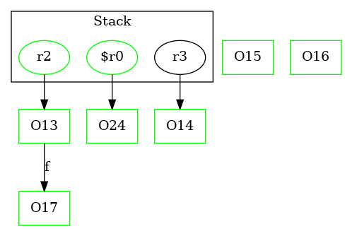

-1 : r2 := @parameter0: Test2Node
-1 : r3 := @parameter1: Test2Node
24 : $r0 = new Test2Node ->class soot.jimple.internal.JAssignStmt {Left: class soot.jimple.internal.JimpleLocal, Right: class soot.jimple.internal.JNewExpr}
24 : specialinvoke $r0.|Test2Node: void |init|()|()
24 : r1 = $r0
25 : r2.|Test2Node: Test2Node f| = r1
26 : return
